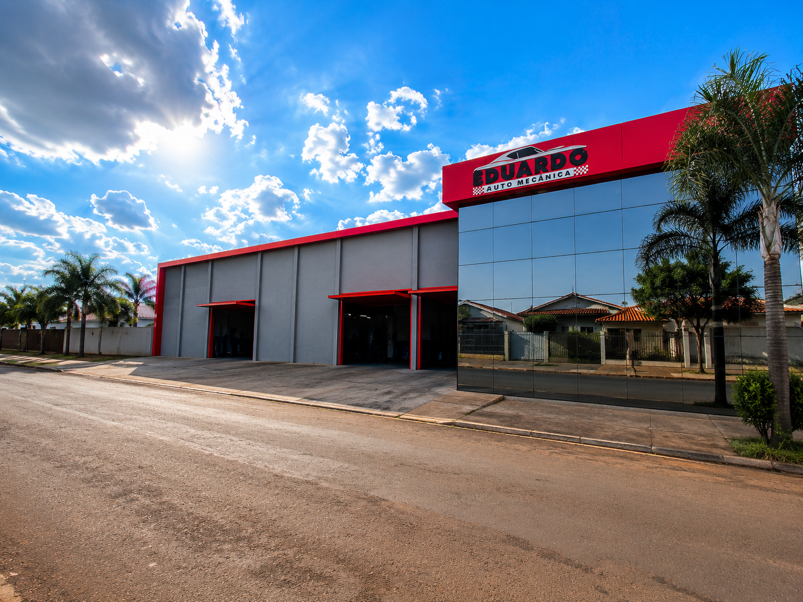
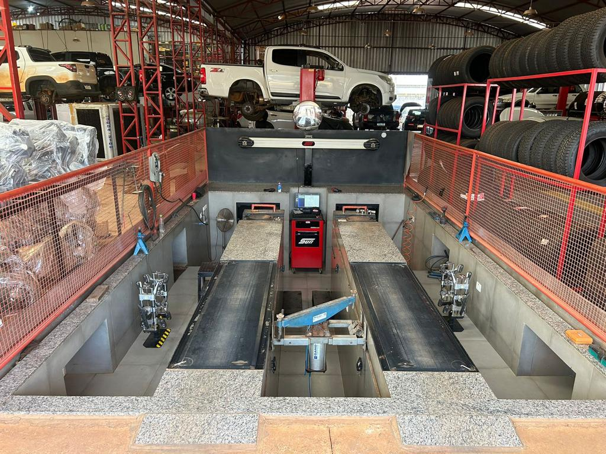
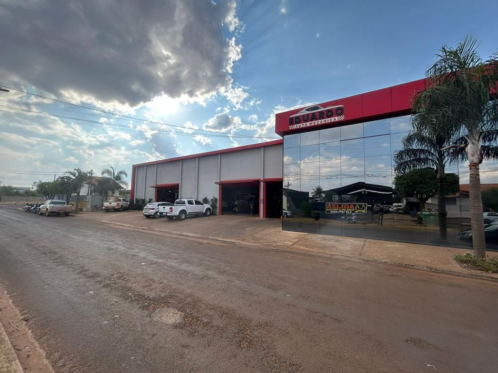
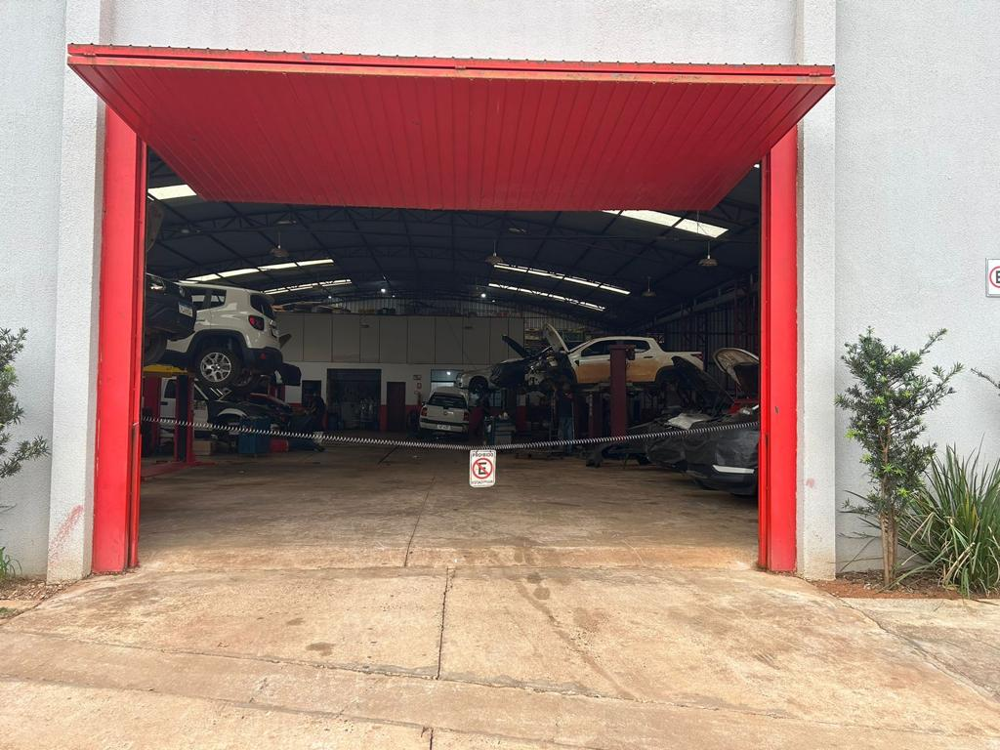

Troca de óleo
Óleo e filtros no momento certo para reduzir atritos, preservar o motor e evitar desgastes prematuros.

Eduardo Auto Mecânica
Manutenção automotiva especializada para cuidar de todos os detalhes do seu carro, com transparência, precisão e atendimento de confiança.
Conheça nossos serviços →


Desde 2010
Proprietários: Eduardo e Viviane
De uma jornada iniciada aos 15 anos à própria oficina em Campo Novo do Parecis, a Eduardo Auto Mecânica foi construída com dedicação, aprendizado e paixão por carros.
Soluções completas
Da manutenção preventiva à estética automotiva, reunimos experiência, tecnologia e cuidado para manter o seu veículo seguro, eficiente e sempre bem apresentado.
Óleo e filtros no momento certo para reduzir atritos, preservar o motor e evitar desgastes prematuros.
Revisão para manter a eficiência do motor, a economia de combustível e a emissão de gases sob controle.
Mais estabilidade, menos vibração e proteção contra o desgaste irregular dos pneus e da suspensão.
Manutenção essencial para o funcionamento suave da transmissão e boas trocas de marcha.
Inspeção e substituição responsável pelo sincronismo preciso entre pistões e válvulas.
Diagnóstico para recuperar conforto, estabilidade e controle em todos os trajetos.
Revisão completa para uma frenagem segura e uma condução tranquila no dia a dia.
Limpeza e análise para evitar perdas de eficiência causadas por sujeira e depósitos de combustível.
Diagnósticos, reparos, ajustes e reconstruções com precisão para o melhor desempenho.
Leitura e correção do sistema que controla a mistura de ar e combustível do veículo.
Otimização da resposta do acelerador, desempenho e eficiência, com avaliação especializada.
Precisão para melhorar a dirigibilidade, aumentar a vida útil dos pneus e economizar combustível.
Limpeza profunda para manter o interior do carro fresco, cuidado e livre de odores.
Restaura e realça o brilho da pintura, reduzindo marcas superficiais e pequenos arranhões.
Revestimento de proteção para reforçar a pintura e criar uma camada duradoura de cuidado.
Restaura clareza e eficácia dos faróis que ficam opacos com o tempo.
Reparo e reforço estrutural com precisão para trincas, fissuras e peças metálicas.
Ajustes estruturais e personalizações para deixar o veículo adequado à sua necessidade.
Reparo de amassados, riscos e imperfeições com acabamento cuidadoso e duradouro.
Recuperação de amassados sem danificar a pintura original do veículo.
Proteção e realce para a pintura, preservando o brilho e a estética do carro.
Lavagem simples, completa ou detalhada, com produtos e técnicas para um resultado impecável.
Produtos automotivos
Produtos confiáveis e acessórios selecionados para complementar a manutenção e personalização do seu veículo.
Nossa oficina


